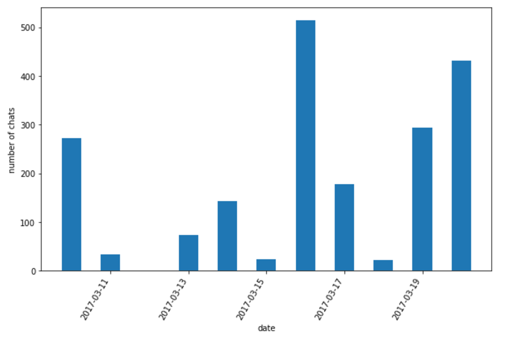
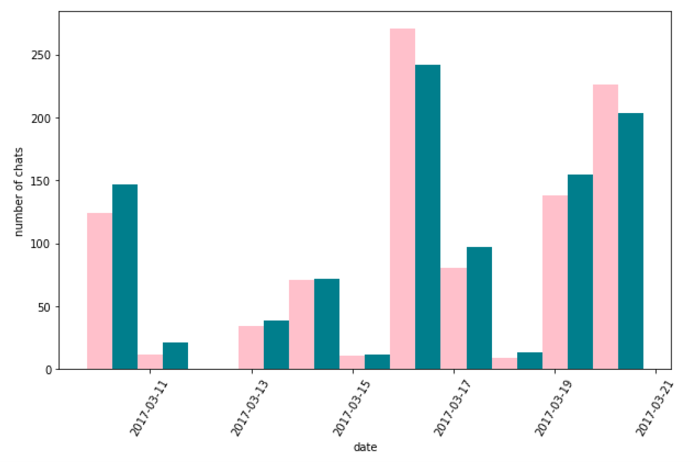
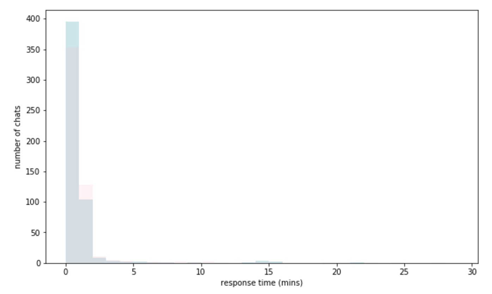

class: center, middle # Analysis of my LINE chat .center[<img src='../image/line_logo.png' width="100px"/>] --- # Line Chat LINE is a very popular chat for Asian peeps. It's the same as Facebook Messenger with more emojis. .center[] --- ### Line Chat file text file looks something like this ```python 2017.03.10 Friday 07:38 user1 hello 08:06 user2 hi, how are you? 08:37 user1 i'm doing great, i'm going to get Thai food tonight. 08:38 user1 and go to the gym later :) 08:40 user2 aww, have fun. send me some photos 2017.03.11 Saturday 01:39 user2 aww, i just got ramen today 01:39 user1 did you like it!? 07:54 user2 hahahahahah yupp ``` text file does not contain stickers and photos. It's just a text `Sticker`, `Photo` --- ### Line Chat file Load file using `csv` library ```python lines = csv.reader(open(file_name)) chats = list(lines) chats = [c[0] for c in chats if len(c) > 0] ... ``` Transform to following list ```python [[2017.03.10, 07:38 user1 hello], [2017.03.10, 08:06 user2 hi, how are you?], [2017.03.10, 08:37 user1 i'm doing great, i'm going to get Thai food tonight.], ... [2017.03.11, 01:39 user2 aww, i just got ramen today], [2017.03.11, 01:39 user1 did you like it!?], [2017.03.11, 07:54 user2 hahahahahah yupp], ... ``` --- ### Group by date and sum Group by `key` in this case is the first in the list ```python from itertools import groupby group_chats = [] for key, group in groupby(chats, lambda x: x[0]): group_chats.append({'date': key, 'chats': [g[1] for g in group]}) ``` Using `dateutil` and `len` to count ```python chats_per_day = [] for group_chat in group_chats: dt = parser.parse(group_chat['date']) chats_per_day.append([dt, len(group_chat['chats'])]) ``` --- ### Total chats per day .center[] --- ### Amount of chat per users We can transform each chat to the following format ```python # chat string '01:39 user2 aww, i just got ramen today' # dictionary {'time': "01:39", 'user': "user2", 'text': "aww, i just got ramen today"} ``` Then use `groupby` again to count ```python grouper = itemgetter("date", "user") chats_per_day = [] for key, group in groupby(sorted(chat_users, key=grouper), grouper): temp_dict = dict(zip(["date", "user"], key)) temp_dict["n_chat"] = len([item for item in group]) chats_per_day.append(temp_dict) ``` --- ### Amount of chat per users .center[] --- ### Chat punch card do the same preprocessing as before then transform days in week into number. ```python from dateutil import parser def day_of_week(day, n_bin=8): return parser.parse(day).weekday() ``` .center[<img src='../image/punch_card.png' width="400px"/>] --- ### Average chat time ```python ... ['2017.03.10 18:40', 'user2'], ['2017.03.10 18:41', 'user2'], ['2017.03.10 18:41', 'user1'], ['2017.03.10 18:42', 'user2'], ['2017.03.10 18:42', 'user2'], ['2017.03.10 18:42', 'user1'], ['2017.03.10 18:42', 'user2'], ... ``` loop through to see time difference ```python user1_responses = [0, 1, 0, 0, 3, 0, 1, 0, ...] user2_responses = [0, 0, 0, 1, 2, 0, 0, 1, ...] ``` --- ### Average chat time Then, just use `hist` from `matplotlib` library ```python import matplotlib.pyplot as plt plt.hist(resp, bins=range(0, 30), alpha=0.6, color=colors[i]) ``` .center[] this is possion distribution roughly. Therefore, we can calucate average waiting time. `t_user1 = 0.636` min, `t_user2 = 0.655` min --- ## Q/A .center[] see more on Github [titipata/visualize_line_chat](https://github.com/titipata/visualize_line_chat)